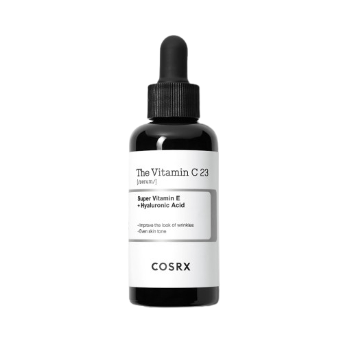
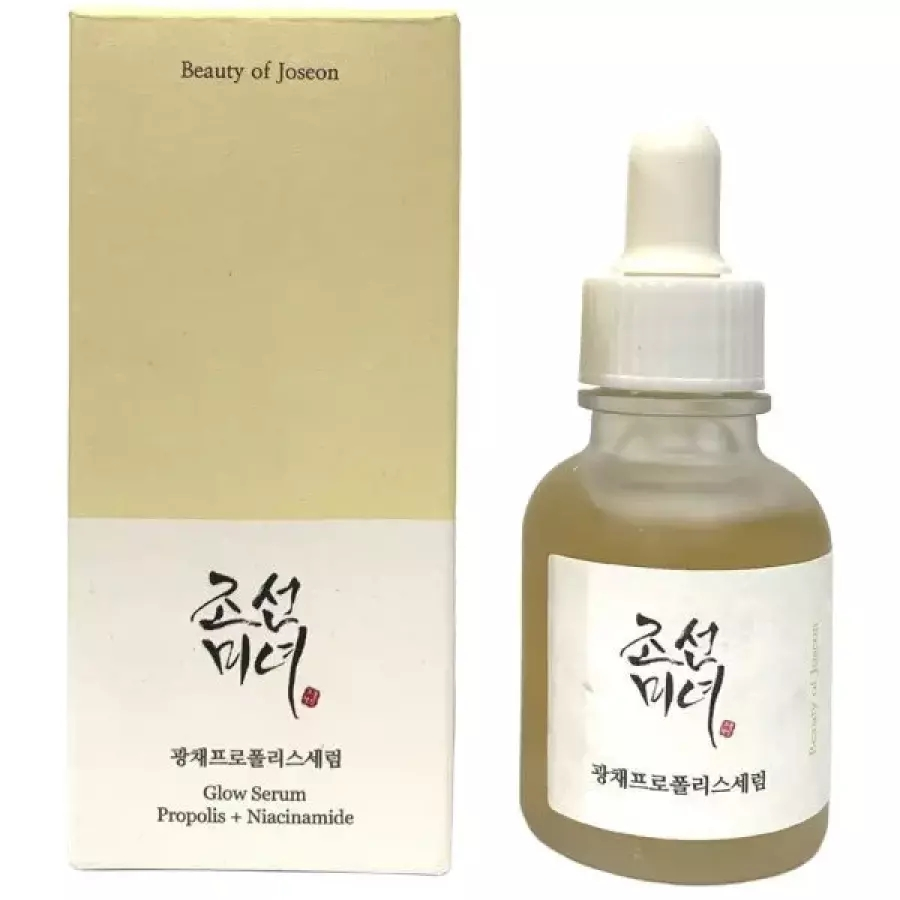
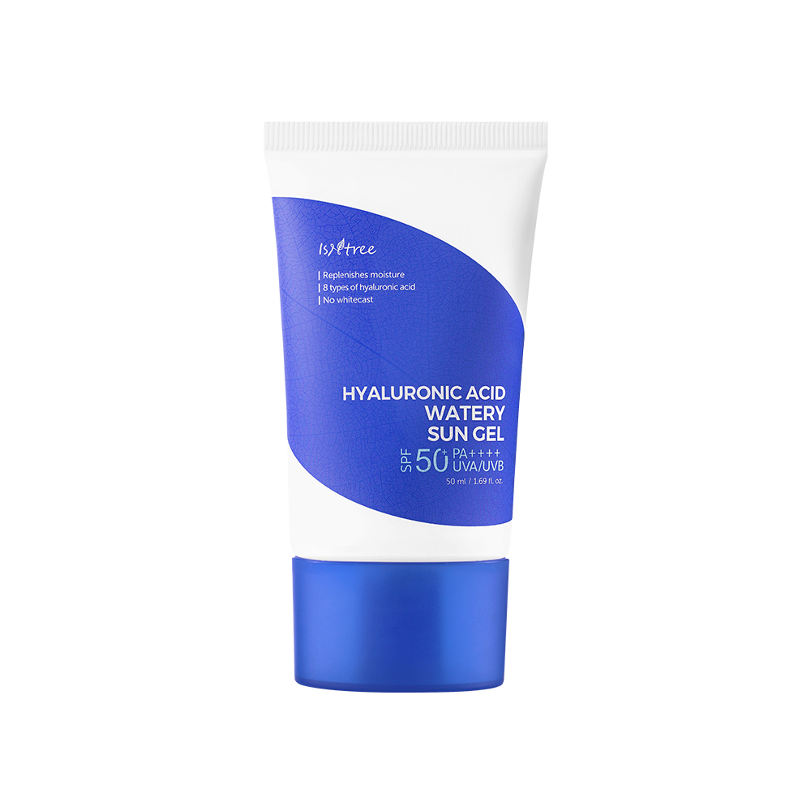

Home › K-Beauty Guide
Best Korean Skincare for Glass Skin
Hydrating, glow-boosting picks
Hydrating, glow-boosting picks. Here are 6 picks worth knowing — real products, honest notes, and roughly what they cost.

Advanced Snail 96 Mucin Power Essence
The cult snail-mucin essence for plump hydration.
The cult snail-mucin essence, at 96%, for plump, bouncy hydration and a healthy look. Slightly slippery texture that many use morning and night.
≈ $25.0 (approx) · Ships worldwide
Check price on Amazon →
Hyaluronic Acid Toner
Deeply hydrating toner that layers well.
Multiple types of hyaluronic acid make this a deeply hydrating toner that layers beautifully. A go-to for dehydrated, tight-feeling skin.
≈ $20.0 (approx) · Ships worldwide
Check price on Amazon →
Glow Serum Propolis + Niacinamide
Glowy propolis serum that calms and brightens.
Propolis and niacinamide give a dewy, calmed finish while gently brightening over time. The lightweight texture layers well under sunscreen, making it a popular daily glow step for most skin types.
≈ $17.0 (approx) · Ships worldwide
Check price on Amazon →
Hyaluronic Acid Watery Sun Gel SPF50+
Dewy gel sunscreen that feels like skincare.
A watery gel sunscreen with hyaluronic acid for a fresh, dewy finish. Popular with dry and normal skin that dislikes heavy SPF.
≈ $20.0 (approx) · Ships worldwide
Check price on Amazon →
Ginseng Essence Water
Lightweight ginseng essence for a healthy glow.
A ginseng essence-toner that adds a nourished, healthy glow. Watery but slightly comforting — nice for dull or tired-looking skin.
≈ $18.0 (approx) · Ships worldwide
Check price on Amazon →
Heartleaf 77% Soothing Toner
Calming heartleaf toner for redness and hydration.
77% heartleaf water to calm redness and add lightweight hydration. A gentle daily toner that suits sensitive and combination skin.
≈ $20.0 (approx) · Ships worldwide
Check price on Amazon →Save this for your next K-beauty haul
Prices are approximate and pulled from public shopping data; always check the retailer for the current price and shade/size before buying.